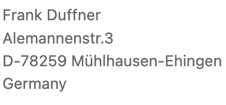
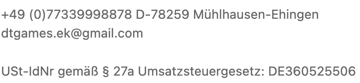

Stand: Juli 2025
Gültig für: https://dtgames.com
DT games ist bemüht, die eigene Website im Einklang mit den geltenden gesetzlichen Bestimmungen zur Barrierefreiheit nutzbar zu gestalten. Als privatwirtschaftliches Unternehmen unterliegt DT games derzeit keiner gesetzlichen Verpflichtung zur vollständigen digitalen Barrierefreiheit. Dennoch möchten wir unseren Beitrag leisten, um allen Nutzer:innen einen möglichst barrierearmen Zugang zu unseren Inhalten zu ermöglichen.
Die Website ist teilweise barrierefrei. Es wurden bereits Maßnahmen ergriffen, um die Zugänglichkeit zu verbessern (z. B. kontrastreiche Gestaltung, Tastaturbedienbarkeit, Alt-Texte für Bilder).
Trotz unserer Bemühungen sind manche Bereiche der Website derzeit nicht vollständig barrierefrei:
Wir arbeiten kontinuierlich daran, diese Barrieren zu identifizieren und zu beseitigen.
Sollten Ihnen Barrieren auf unserer Website auffallen oder benötigen Sie bestimmte Inhalte in barrierefreier Form, kontaktieren Sie uns gerne:


Da DT games ein privatwirtschaftliches Unternehmen ist, entfällt derzeit die Anwendbarkeit des formellen Durchsetzungsverfahrens gemäß § 16 BITV 2.0.
Wir beobachten die rechtlichen Entwicklungen (z. B. den Europäischen Rechtsakt zur Barrierefreiheit 2025) und werden unsere Richtlinien bei Bedarf anpassen.